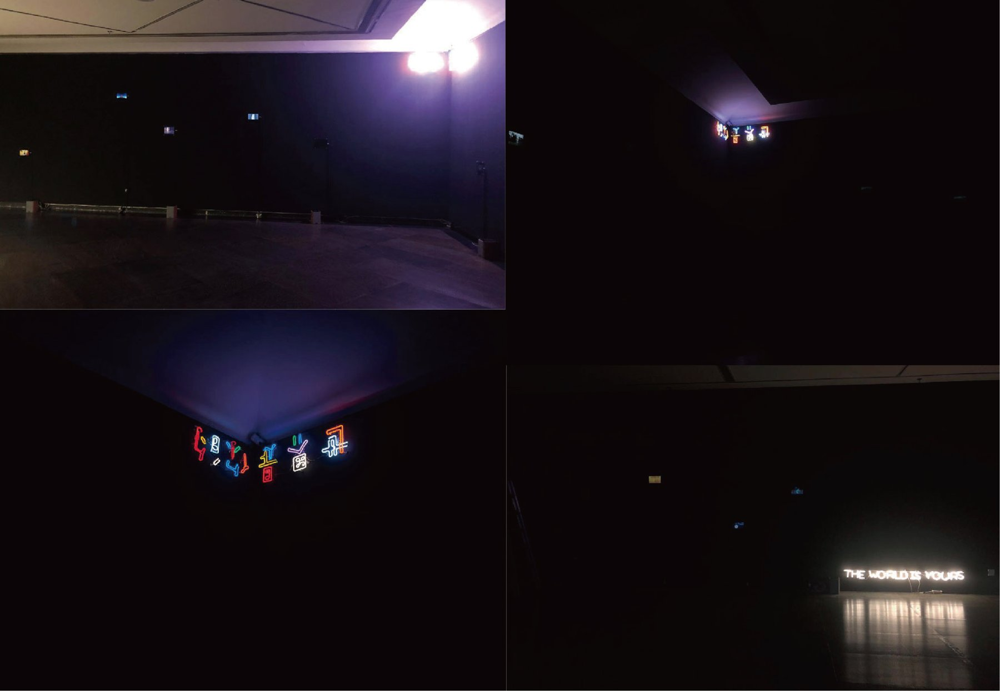

We live, more than ever, on other people's experience. Reviews, guides, patient stories, podcasts, the advice of AI — personal experience is no longer private memory; it circulates day and night as content, evidence, care, and data. This circulation rests on an assumption we rarely examine: that experience can be spoken, heard, and handed over whole.
Yet understanding always begins from a partial position — no one stands inside another's experience. We know more than we can tell; experience keeps a tacit remainder, and language carries only its surface. Understanding was never a handover. It is an ongoing negotiation: guessing, misreading, repairing — until, at some moment, someone says: I think I understand.
We spent long hours with several blind and low-vision friends, asking them to describe their worlds, and translated those descriptions into moving images. They are not the subject of this work but its most honest case: the same negotiation happens in every act of telling and listening — and it is happening now, between you and this dark room.
The captions beside the films are the translators' second readings — not quotations. Some films combine the descriptions of several storytellers. They record how we listened, not what was said.
Medium: multi-screen digital video, 8-channel sound installation. The sound layer is complete in itself: for blind and low-vision visitors it is the entire work, and the images are its translation into light.
© THE WORLD IS YOURS. All films and recordings remain with their makers.
Eight channels, eight corners of a dark room. The voices never pair with the screens: to see, you walk to an image; to listen, you stand where the channels balance. No position lets you do both at once.
Here, the same rule holds: the voices surface only while you keep still. Move your light, and they sink back into the dark. Every voice ends on the same sentence — the one this work is named after.
Combined stereo reference of the eight channels, 11'09". In the room they play as eight independent sources.

Installation views — small screens in a blackout hall; fractured-glyph neon in the corner; the sentence as a white neon resting on the floor.
It may be a gift. It may be a trust handed over. It may simply be the version least likely to be misunderstood. We cannot tell which — and this work refuses to decide.